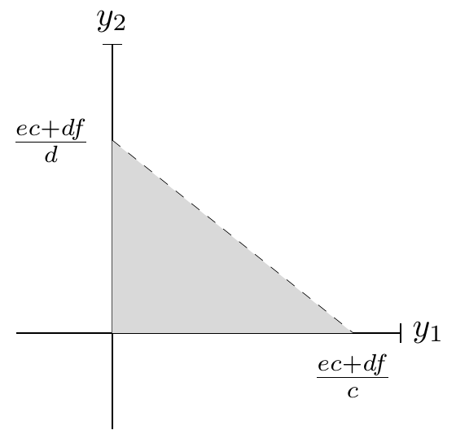

8 Ejercicios Pauta:
8.1 Sobre capítulo I:
8.1.1 :
- A causa de las constantes enfermedades pulmonares y riesgos para la salud, el gobierno decide aumentar el impuesto al tabaco. Como consecuencia de esto, un 37% de los fumadores deja este vicio y hay un 45% menos de enfermedades relacionadas al uso de esta ¿Qué principio esta relacionado con este cambio económico?
- Dado que bajaron las enfermedades y que el estado logró recaudar más dinero por el aumento del impuesto anterior, el gobierno decide aumentar más aún el impuesto a este bien de consumo. Esta vez, aumento el mercado negro de este servicio y junto a esto, el estado recaudó menos y por la mala calidad del tabaco traficado aumento un %15 las enfermedades relacionadas a este habito. ¿Qué principio es el que esta relacionado con este nuevo cambió?
- Ahora, un comprador cualquiera de cigarrillos al ver que subieron los impuestos, tiene que decidir entre comprar una cajetilla o comprar la revista que compra todos los domingos ¿Que principio es el que se relaciona a esta situación?
RESPUESTA:
- “En ocasiones, el gobierno puede mejorar los resultados del mercado.” Ya que, al eliminar una externalidad negativa (un efecto negativo del mercado hacia la sociedad) está dando buenos resultados en el mercado. Dicho de otra forma, está mejorando la distribución de los bienes.
- “Normalmente, los mercados son un buen mecanismo de asignación de recursos.” Al empeorar la situación sanitaria de la sociedad, a a través, de la intervención estatal, podemos concluir que en este caso, era mejor que el mercado no se intrevenga más.
- En este caso, los principios 1,2 hacen efecto en este evento, y dependiendo del caso, el 4 también hace efecto. Para el primer principio el comprador tiene que decidir entre una cosas o otra, para el segundo tendrá que renunciar a una de las dos y para el cuarto en el caso que escoja la revista, el impuesto dado es un incentivo que afecta el mercado.
8.1.2 :
Con respecto al modelo de economía circular. 1) ¿Qué demandan los hogares? 2) ¿Qué demandan las empresas? 3) ¿Qué ofrecen los hogares? 4) ¿Qué ofrecen las empresas?
RESPUESTA:
Al demandar, decimos que este agente es el que quiere el bien o servicio. Por otro lado, al ofrecer, decimos que el agente es el dueño de este y que lo esta ofreciendo a cambio de algo.
- Los hogares demandan bienes y servicios.
- La empresa demanda factores de producción, es decir, trabajo, capital, tierra y tecnología.
- los hogares ofrecen factores de producción.
- las empresas ofrecen bienes y servicios.
8.1.3 :
Tenemos que un pastelero tiene como insumo limitante 100 huevos, para hacer un pie de limón gasta 10 huevos, mientras que para hacer un kg de pan gasta 5 huevos. 1) si quiere hacer 3 pie de limón, cuanto es la máxima cantidad de pan que puede hacer. 2) exprese la situación en la forma matemática \(\bar x=a_1y_1+a_2y_2\). 3) Haga un gráfico de la situación. 4) Ahora, digamos que le llegaron más huevos y le alcanzó para hacer 15 pie de limón y 15 kg de pan, cuantos huevos más tiene.
RESPUESTA:
- Podemos expresar esto como:
\[ 100=3\cdot 10 +5 \cdot x \]
Donde “\(x\)” será la cantidad de pan. Resolviendo:
\[ 100-30= 5 \cdot x \] \[ 70/5= x \] \[ 14= x \]
Se podrán hacer 14Kg de pan. 2) Esto lo podemos expresar como:
\[ 100=10\cdot y_1+ 5\cdot y_2 \]
Donde “\(y_1\)” son la cantidad de pie de limón y “\(y_2\)” la cantidad de huevo. 3) Calculando la máxima cantidad de pan y pies que se pueden hacer podemos decir que el máximo de pan es \(20\) y de pies son \(10\). El gráfico resulta:
- Modelamos la ecuación, recuerde que dice cuantos huevos más tenemos, por lo que el resultado de la cantidad de huevos totales habrá que restarle los 100 iniciales. \[ \bar x=10\cdot 15+ 5\cdot 15 \] \[ \bar x=150+ 75 \] \[ \bar x=225 \]
Ahora, a este resultado le restaremos los \(100\) huevos iniciales.
\[ \text{huevos agregados}=225-100 \] \[ \text{huevos agregados}=125 \]
8.1.4 :
Un productor “\(A\)” de chocolate tiene como factor limitante el cacao, si quiere producir chocolate dulce necesita “\(c\)” de este bien por cada kg y si quiere producir chocolate amargo necesita “\(d\)” de este bien por cada kg. Para gastar todo su cacao necesita producir “\(e\)” kg de chocolate dulce y “\(f\)” de chocolate amargo.
- Haga la ecuación que represente kas FPP.
RESPUESTA
Primero definimos \(y_1\) es el chocolate dulce, y el amargo es \(y_2\), luego: \[ \bar{x}=cy_1+dy_2 \]
Por la segunda parte del enunciado tenemos que: \[ \bar{x}=ec+df \]
Finalmente: \[ ec+df=cy_1+dy_2 \]
- Haga el gráfico de esta ecuación.
RESPUESTA
